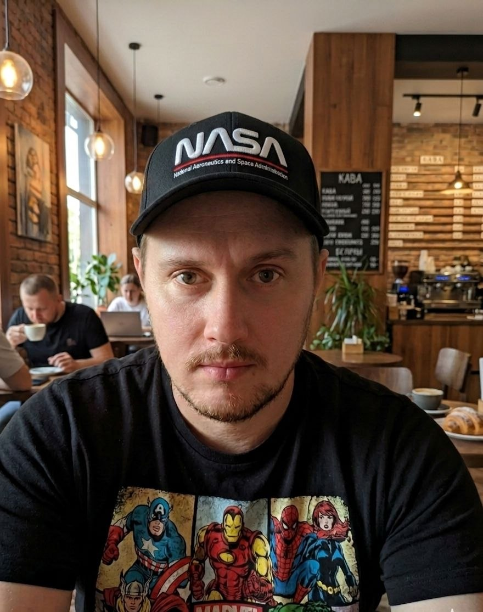

STATUS: ACTIVE // READY_TO_BUILD
Oleksandr Kulyk
Full-Stack Developer
Створюю веб-додатки та занурююсь в аналітику складних систем, поєднуючи логіку програмування з математичним моделюванням стратегій. Зараз я активно вдосконалюю свої навички у full-stack розробці (JavaScript, Node.js, SQL), оскільки вважаю критично важливим створювати чисті, швидкі та відмовостійкі інтерфейси. Цей сайт — мій персональний цифровий простір, де інженерія перетинається з усвідомленим, структурованим підходом до роботи та життя.